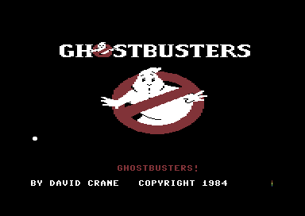

<meta charset="utf-8">
<meta name="viewport" content="width=device-width, initial-scale=1">
<title>{{title}}</title>
<link rel="preconnect" href="https://fonts.googleapis.com">
<link rel="stylesheet" href="https://fonts.googleapis.com/css2?family=Lato:wght@400;700;900&family=IBM+Plex+Mono:wght@400;500&display=swap">
<link rel="stylesheet" href="reference/ghostbusters-page.css">
<!-- tabs -->
<header class="hero">
  <p class="eyebrow">{{platform}} · {{year}} · {{publisher}}</p>
  <h1>{{title}}</h1>
  <p class="sub">David Crane's film tie-in for Activision, built in six weeks on the bones of an unfinished driving game, and a UK number one in early 1985.</p>
</header>
<main class="wrap">
<section id="game">
  <p class="fig">01 · The game</p>
  <h2 class="t">Run a ghost-catching business, and end with more money than the bank lent you</h2>
  <p>In <i>Ghostbusters</i> the bank lends you $10,000 to start a franchise. You spend it on a car and equipment, then drive round a city map to buildings where Slimers have moved in, trap them for fees and bring the traps back to headquarters. All the while the city's PK energy climbs, the Marshmallow Man stomps on buildings, and two wanderers, the Keymaster and the Gatekeeper, head for the Temple of Zuul.</p>
  <p>When they meet there, the bank checks your balance. Less than you started with ends the game. Otherwise the car goes to Zuul, where two of your three men must slip past the Marshmallow Man into the building. Finish with more money than you started with and the game gives you an account number that carries it into the next game.</p>
  <figure class="overview-shot"><figcaption>The title screen, captured in an emulator. The theme plays while a ball bounces along the lyrics.</figcaption></figure>
  <p class="overview-links"><a href="play.html">Play Ghostbusters</a><a href="levels.html">The city</a><a href="mechanics.html">How it works</a><a href="music.html">Music and speech</a></p>
</section>

<section id="makers">
  <p class="fig">02 · The makers</p>
  <h2 class="t">David Crane's design, with help from across Activision</h2>
  <p>The game names one person. Its title screen says DESIGNED BY DAVID CRANE COPYRIGHT 1984, and a cassette manual <a href="https://archive.org/details/Ghostbusters_1984_Activision_524_Instructions">on the Internet Archive</a> credits nobody. Crane had made <i>Pitfall!</i> for the Atari 2600 two years earlier.</p>
  <p>Other roles come from later sources. <a href="https://www.mobygames.com/game/2619/ghostbusters/credits/c64/">MobyGames</a> lists Adam Bellin for additional programming and Hilary Mills for graphics. <a href="https://en.wikipedia.org/wiki/Ghostbusters_(1984_video_game)">Wikipedia</a> and the <a href="https://www.c64-wiki.com/wiki/Ghostbusters">C64-Wiki</a> credit the music to Russell Lieblich, arranging Ray Parker Jr.'s theme. Wikipedia, citing <i>Retro Gamer</i> 25 (2006), says the sing-along with the bouncing ball was added at the last minute by Garry Kitchen, Dan Kitchen and Alex DeMeo.</p>
  <p>Who spoke the speech is not known. Asked about it in <i>Retro Gamer</i>'s <a href="https://www.dcrane.com/Press_files/InTheChair_DAVIDCRANE.PDF">"In the Chair with David Crane"</a>, Crane said he did not clearly remember. He did remember the program: "I had written an audio digitiser and driver for the C64". The <a href="music.html#speech">Music and speech</a> tab shows how that driver works.</p>
</section>

<section id="six-weeks">
  <p class="fig">03 · Six weeks</p>
  <h2 class="t">A driving game already in the works became Ghostbusters</h2>
  <p>A film tie-in has to reach the shops while the film is still showing. Wikipedia, citing <i>Retro Gamer</i> 25, says Activision gave the game six weeks where nine months was normal, and that Columbia Pictures supplied the script and some storyboards but no idea of what the game should be. <i>Retro Gamer</i>'s interview with Crane captions it "Turned around in just six weeks".</p>
  <p>The answer was a game Crane already had in progress, <i>Car Wars</i>. <a href="https://www.gamesthatwerent.com/gtw64/car-wars/">Games That Weren't</a> quotes him from <i>Retro Gamer</i> 79 (2010): "Car Wars gave Ghostbusters the economy, the car customisation and the driving scene where the player could vacuum up ghosts." The code still reads that way: a bank balance that decides the ending, a shop that loads equipment into a car, and a road where the ghost vacuum is the only thing to do.</p>
</section>

<section id="reception">
  <p class="fig">04 · Reception</p>
  <h2 class="t">Reviewers praised the sound, and it topped the charts</h2>
  <p>British magazines reviewed it at the turn of 1985, and the presentation was what they wrote about. In <i>Personal Computer Games</i> 14, January 1985, Chris Anderson wrote that "the presentation and initial impact of this program are unbelievable" and that "the music and speech could hardly be bettered". He added that the game "might not work, were it not for the fact that it succeeds so well in recreating the feel of the film".</p>
  <p><i>Your Commodore</i> 7, April 1985, called it "impressively programmed" and "Recommended, even though you don't get a free Sigourney Weaver with every cassette". It said the speech was "done using only the basic 64 sound chip filters: no additional hardware is required". The second half is right. The first is not quite: the code plays the speech through the sound chip's volume register, not its filters (<a href="music.html#speech">Music and speech</a>). Both quotes are as transcribed by the <a href="https://commodoreformatarchive.com/commodore-format-at-the-movies-ghostbusters/">Commodore Format Archive</a>.</p>
  <p>In the United States the newsletter <a href="https://archive.org/details/computer-entertainer-3-9"><i>Computer Entertainer</i></a> had the C64 version at number 6 in its December 1984 top ten, under the headline "Ghostbusters Take Over Europe!". Wikipedia, citing <i>Commodore User</i> and <i>Computer Gamer</i>, gives it the top of the UK chart from January to March 1985.</p>
</section>

<section id="versions">
  <p class="fig">05 · Other versions</p>
  <h2 class="t">Ports, re-releases and the copies studied here</h2>
  <p>The C64 version came first. Wikipedia lists ports for the ZX Spectrum, Amstrad CPC, Apple II, Atari 8-bit, MSX, IBM PCjr, Atari 2600, NES and Master System, most of them made without Crane, and a budget re-release on Mastertronic's Ricochet label in 1988.</p>
  <p>These pages describe the C64 program itself. Two copies were compared: a one-file image made to load in one go, and a cracked disk. The game's code is the same, at the same addresses, in both. The cracked disk lost two of the four car pictures and part of one speech phrase along the way (<a href="about.html#copy">About</a>).</p>
</section>

<section id="findings">
  <p class="fig">06 · What the code keeps</p>
  <h2 class="t">A shelf item nobody can buy, and an ending the guides get wrong</h2>
  <p>The code has an eighth piece of equipment with a price and no shelf, a speech phrase the game never says, a bank check that lets an unchanged balance through, and a GOOD TRY ending that is not what the online guides say it is. The <a href="discoveries.html">Discoveries</a> tab keeps these apart from the questions still open.</p>
  <p class="overview-note">The <a href="source.html">Source code</a> tab links every explanation to its address. The <a href="about.html">About</a> tab records credits, sources and methods. No game image is hosted here.</p>
</section>
</main>
<footer style="margin:16px 0 0;padding:22px var(--gx) 0;border-top:1px solid #e0ded8;font-family:'IBM Plex Mono',ui-monospace,Menlo,monospace;font-size:12px;color:#80838a"><a href="/kit.html" style="color:#1f5fa8;text-decoration:none">Kit changelog</a> · <a href="https://github.com/gamesexplained/gamesexplained" style="color:#1f5fa8;text-decoration:none">GitHub</a> · <a href="https://discord.gg/3V9GWyRDWV" style="color:#1f5fa8;text-decoration:none">Discord</a><br>© Games Explained contributors. Write-ups, facts and symbol maps are available under <a href="https://creativecommons.org/licenses/by-sa/4.0/" style="color:#1f5fa8;text-decoration:none">CC BY-SA 4.0</a>; code under <a href="https://opensource.org/licenses/MIT" style="color:#1f5fa8;text-decoration:none">MIT</a></footer>
